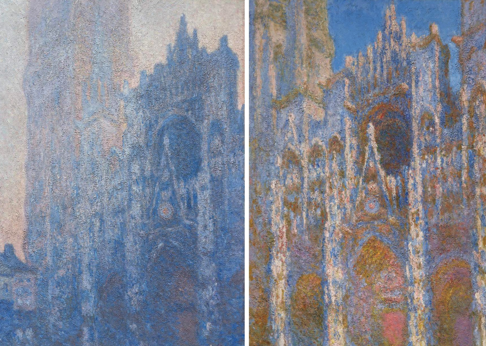

Why I Started AIC
For most of my life, I thought engineering and art belonged to different worlds.
Engineering was where you went for logic, efficiency, and solutions. Art seemed to belong somewhere else. It felt intuitive, emotional, and resistant to measurement. One side was supposed to produce answers. The other side seemed more interested in asking better questions.
As an engineer, I learned to think in terms of systems, tradeoffs, and outcomes. When a problem appeared, the task was to find the best solution and move forward.
Then AI arrived, and something in that logic started to shift.
What stayed with me was not simply that AI could write code, generate images, or respond in fluent language. It was the speed at which it could produce possibilities. Suddenly, ideas were cheap. Variations were endless. Drafts appeared faster than I could fully look at them.
The difficult part was no longer making something. The difficult part was deciding what deserved to remain.
AI could give me one hundred images. It could not tell me which one felt alive.
It could offer ten directions. It could not tell me which one matched the kind of person I wanted to become.
The more I worked with AI, the more I found myself returning to one word: judgment.
I do not mean judgment as correctness. I mean judgment as taste, meaning, and choice. I mean the human ability to sense when something is empty, when something is true, and when something is worth following further.
Around the same time, I began spending more time in museums. At first it was simple curiosity. I visited the Museum of Fine Arts in Boston and the MIT Museum expecting to move between two different worlds, art on one side and science on the other.
Instead, I kept running into the same patterns.
At the MIT Museum, I saw scientists and engineers using form, image, and interaction to express ideas that could not be carried by equations alone. The work was analytical, but it was also sensorial. It asked people to see, feel, and interpret.
At the MFA, two Monet paintings stopped me. They were both part of his Rouen Cathedral series from 1894, and seeing them side by side made the logic of observation feel suddenly visible.

What moved me was not only their beauty. It was the discipline inside them. Monet was not chasing novelty. He stayed with the same cathedral and watched what happened as light changed. The structure remained, but the feeling of the image shifted completely. Stone became atmosphere. Architecture became vibration.
That did not feel opposite to engineering. It felt strangely close to it.
It was observation. It was patience. It was precision. It was the willingness to return to the same subject again and again until a pattern became visible.
The more time I spent with work like this, the less separate art and engineering seemed. Both ask for attention. Both require decisions under uncertainty. Both depend on a way of seeing that can be trained but never fully automated.
That realization changed how I thought about creativity. I stopped seeing art, engineering, work, and life as isolated domains. They began to feel like different expressions of the same practice: paying attention, making choices, and slowly learning what matters.
That practice feels even more important in the age of AI.
As AI becomes more capable of generating answers, human responsibility does not disappear. It becomes sharper. We still decide what is worth pursuing. We still decide what is beautiful. We still decide what feels meaningful. We still decide who we are becoming through the things we keep choosing.
That is where AIC came from.
I did not want to create another event about tools, speed, or productivity. I wanted to make space for a different conversation. A slower one. A more searching one.
AIC is my attempt to gather engineers, designers, artists, researchers, and other curious people into a room where creation matters more than performance, and where AI can be used not to replace judgment, but to exercise it.
Each gathering changes. The prompts change. The format changes. The people change.
But the question underneath it stays the same: when answers become abundant, how do we decide what matters?
I do not think AI can answer that question for us.
I do think it makes the question impossible to ignore.
AIC is a space where I hope we can stay with that question together.